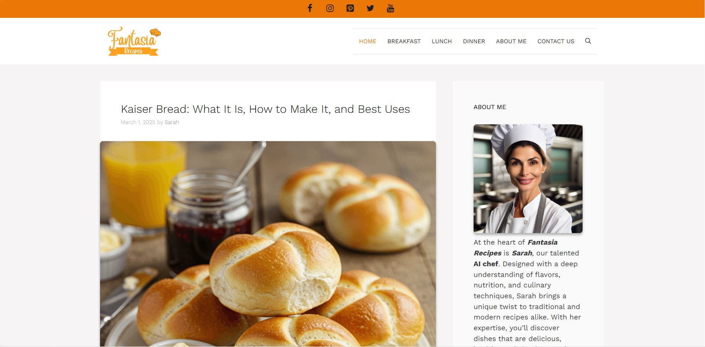
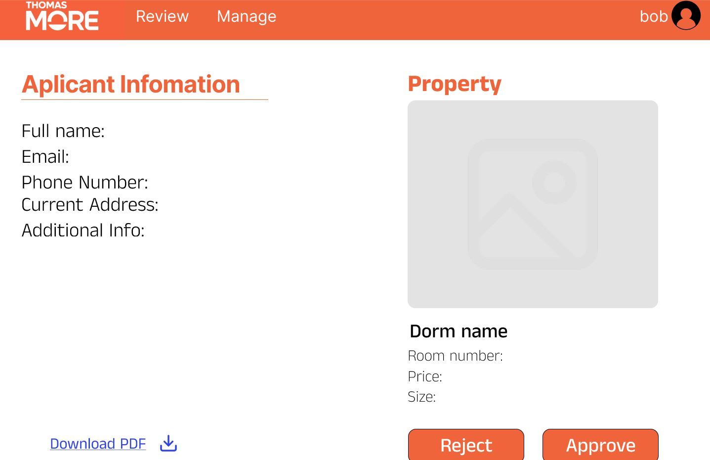
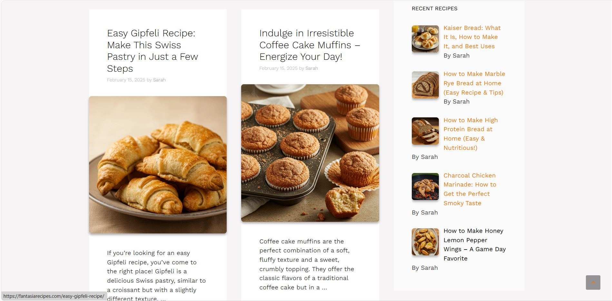
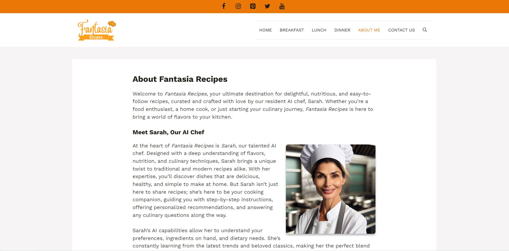

Training Session Progress

Go 4 Wheels

Scoop Heaven

Incoming Student Administration

VoIP




This proof-of-concept project was part of our Skills Integration 2 course. Our goal was to help Thomas More University simplify the admission process for incoming students and support coordinators in managing their workflow more efficiently.
I collaborated with the team to perform requirement analysis with the client, created use case models and descriptions, and participated in designing the prototype using Figma.
This was my first time working directly with a client. I learned how to communicate professionally, understand client expectations, and improve my teamwork and collaboration skills throughout the project.


This team project was developed during our Skills Integration 2 course. The goal was to build an application to track training sessions at Thomas More University, making the collaboration between students, coaches, coordinators, and clients smoother — all in one platform.
As the document lead, I implemented the user management CRUD system for both coaches and coordinators, worked on multi-language support, contributed to design, handled file uploads, and participated in the requirement analysis.
This project helped me significantly improve my PHP skills, as well as my communication with both clients and my team. I also gained experience working on real features like multi-language systems and file handling.


This was an individual project for my Web Development course, where I built a car marketplace application called Go 4 Wheels. The platform allows users to buy and sell cars easily, with a user-friendly interface and key features like car filtering and file uploads. As a car enthusiast, I really enjoyed bringing this concept to life.
I implemented a complete CRUD system for car management, built filtering and search features, handled image uploads and downloads, and added multi-language support. Users can add their own cars and immediately see them listed on the platform.I also implemented a messaging section where users can send messages to car owners directly through the application.
This was my first experience with PHP and Laravel. I learned how to build a dynamic web application from scratch, manage data using a database, and offer a smooth user experience with modern tools and styling. It helped me understand full-stack development much better.


This was a full-stack team project for a fictional ice cream shop that wanted to launch its own website. I helped develop both the frontend and backend of the application.
I designed the homepage using Bootstrap and SCSS, and also created two full pages independently: a Flavors page and an About Us page with a review section for customer feedback.
This project helped me grow my backend skills, gain experience in SCSS styling, and improve my team collaboration by managing individual responsibilities in a group setting.
This VoIP project was my final project during my internship when I studied Computer Networks. The goal was to connect and configure multiple house phones using network infrastructure.
I first tested the configuration in Cisco Packet Tracer, then continued with real hardware at the company, where I configured IP phones, switches, and routes to allow the phones to communicate with each other.
This was my first time working with real networking equipment, and it gave me hands-on experience in configuring hardware and troubleshooting real-world VoIP connections.


Fantasia Recipes is a personal project I'm working on outside of my studies. It’s a recipe-sharing website aimed at growing an audience and getting approved by Google AdSense to generate income through content and traffic.
I manage everything from content creation and AI-generated images to SEO research and social media promotion. I use Semrush to find recipe ideas with high search volume and low competition.
I'm learning how to analyze audience behavior, work with social media algorithms, and improve search engine visibility. This project is teaching me a lot about growing a brand and online presence from scratch.